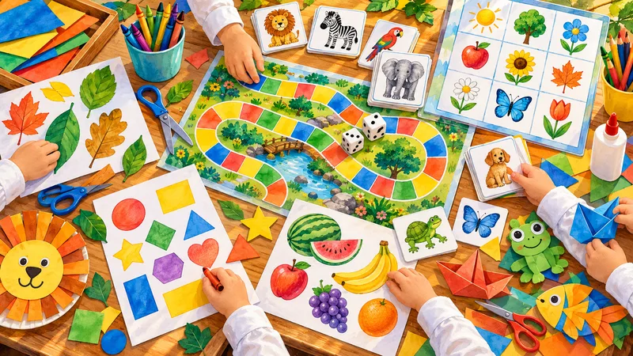

כלים למחנך
דף מפתח: משמעת וסמכות בכיתה, סדרת שיעורי חינוך, הדרכה למורה, חומרים לכיתה, קול המורה ובינה מלאכותית
236 פריטים
משמעת וסמכות בכיתה
כל חומרי המשמעת במקום אחד: מדרגים של עשרות כלי משמעת, מדריכים לניהול הכיתה, כלים מעשיים, משנת הרב יעקובזון, התורה מול הפסיכולוגיה והתמודדות עם הפרעות התנהגות
73 פריטיםסדרת שיעורי חינוך – הרב יהודה טאוב
סדרת שיעורים על חינוך הילד: הפנמה, דימוי עצמי, עידוד, דוגמה אישית, גיל ההתבגרות, חום ואהבה ויראת שמיים
35 פריטיםהמורה – הוראה, הדרכה ודרשות
איך מלמדים משנה, גמרא, הלכה ותנ״ך, הגיל הרך, רב בית הספר, מעלת המלמד, ודרשות לסיומים ולאירועים
50 פריטים
🏫חומרים לכיתה
מערכי שיעור, דפי עבודה ומצגות לתלמידים: שיעורי ע.מ.ר, רעיונות לדיון בכיתה ותוכניות לחינוך מהלב
35 פריטיםקול המורה
מחקרים ותרגילים לשמירה על הקול: נשימה, דיבור מהבטן, היגיינה קולית ותרגילי קול יומיים
12 פריטיםבינה מלאכותית וכלים דיגיטליים
מדריכים ופרומפטים לבינה מלאכותית בהוראה, ואפליקציות שבנינו למורה: הקלטה, דף אינטרנט לשיעור, מדריכי עיצוב
31 פריטיםלמי שאין וואטסאפ: כל ההודעות של הקבוצה במייל אחד מסודר ביום, ארכיון עם חיפוש לפי מילה, שולח ותאריך, ונמענים מטבלה בלי הגבלה. 50 ₪ לחודש לכל הקבוצה
התלמידים מחברים חידה בהלכה או על סיפורי התנאים: שאלה ושלוש תשובות קצרות. בתוך דקה הם מקבלים תשובה אם החידה נכונה, ואם צריך – הסבר עדין והצעה לתיקון. חידה נכונה מקבלת ציור ונכנסת למשחק באתר עם שם הילד, וההורים מקבלים הודעה. הכיתה יכולה לפתור יחד את החידות שחיברו ילדים אחרים. מתאים לכיתות א׳–ו׳, בחינם